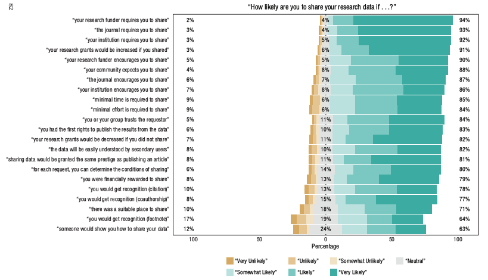
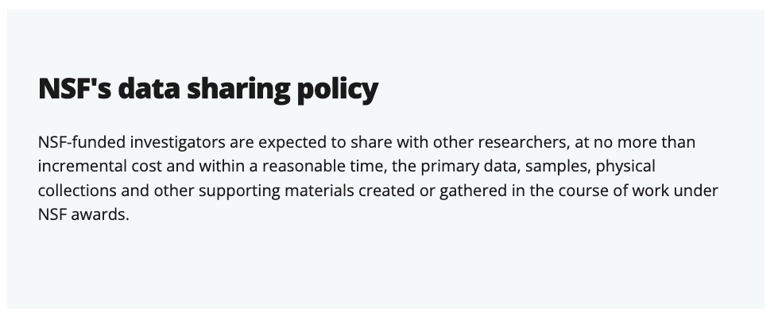

flowchart LR
A(["Idea"]) --> B["Proposal"]
B --> C("Project_1")
B --> D("Project_2")
D --> E("Paper_2")
C --> F("Paper_1")
E --> G("Fame & Glory")
F --> G
Project & data management
Best practices
Rick Gilmore & Alaina Pearce
Prelude

Figure 1: https://penn-state-open-science.github.io/sleic-best-practices-2025-12-02/
Agenda
- Why
- How
- Where
Why (share data)
An ethical thing to do
Whereas regulators of human subjects research often view data sharing solely in terms of potential risks to subjects, we argue that the principles of human subject research require an analysis of both risks and benefits…
– Brakewood & Poldrack (2013)
An ethical thing to do
…such an analysis suggests that researchers may have a positive duty to share data in order to maximize the contribution that individual participants have made.
– Brakewood & Poldrack (2013)
Tenopir et al. (2020) Fig 7

Tenopir et al. (2020) Fig 7
- Must publish first
- No time, funding
- No permission
- Not required
- No place to put
- Insufficient skills
Houtkoop et al. (2018)
Houtkoop et al. (2018) Figure 3a
Houtkoop et al. (2018) Figure 3b
Moving the needle
Houtkoop et al. (2018) Figure 3b
- Required by funder, journal, institution
- Encouraged by funder, journal, institution
- Easy, shown how
- Garner citations, recognition, bigger/more grants
Funders think you should
“Preparing your data management and sharing plan” (n.d.)
“Data management & sharing policy overview” (n.d.)
National Institutes of Health (n.d.)
- NIH now requires a data management and sharing plan.
“Research data management” (n.d.)
- Required by funder, journal, institution
- Encouraged by funder, journal, institution
- Easy, shown how
- Garner citations, recognition, bigger/more grants
How

Giphy

https://teacherhead.com/2017/02/27/reinventing-the-wheel-again/
Principles
- Plan your work, work your plan
- “Good enough” practices
- Automate
- Document
- Get credit
Plan your work
flowchart LR
A(["Idea"]) --> B["Proposal"]
B --> C("Project_1")
B --> D("Project_2")
B --> I("IRB protocol")
G(["Data mgmt plan"]) --> B
G <--> I
C --> I
D --> I
D --> E("Paper_2")
C --> F("Paper_1")
flowchart LR A["Project_1"] --> B["Survey"] A --> C["fMRI"] A --> D["Task_1"] A --> E["Task_2"] B --> P["Data_pipeline_1"] C --> Q["Data_pipeline_2"] D --> R["Data_pipeline_3"] E --> R F["Data mgmt plan"] --- B & C & D & E & P & Q & R P --> G["Analysis_1"] Q & R --> H["Analysis_2"] G & H --> I["Poster"] G & H --> J["Paper"]
flowchart LR A["Project_1"] --> B["Survey"] A --> C["fMRI"] A --> D["Task_1"] A --> E["Task_2"] B --> P["Data_pipeline_1"] C --> Q["Data_pipeline_2"] D --> R["Data_pipeline_3"] E --> R F["Data mgmt plan"] --- B & C & D & E & P & Q & R P --> G["Analysis_1"] Q & R --> H["Analysis_2"] G & H --> I["Poster"] G & H --> J["Paper"] C & D & G & H & F --> K["Data repository"]
flowchart LR A["Project_1"] --> B["Survey"] A --> C["fMRI"] A --> D["Task_1"] A --> E["Task_2"] B --> P["Data_pipeline_1"] C --> Q["Data_pipeline_2"] D --> R["Data_pipeline_3"] E --> R F["Data mgmt plan"] --- B & C & D & E & P & Q & R P --> G["Analysis_1"] Q & R --> H["Analysis_2"] G & H --> I["Poster"] G & H --> J["Paper"] B & C & D & G & H & F --> K["OpenNeuro"] B --> L["OSF"] K --- L
Lesson learned
Plan your workflow in as much detail as you possibly can before you start.
Lesson learned
Evaluate, revise, and update.
Document what you changed, when, and why.
Recommended practice
Version your protocol.
Manual is fine: e.g, nsf-2412345-protocol-2025-12-02v01.docx.
Automated is better: Google Docs keeps version histories. Quarto enables git-versioned web sites as protocols.
Examples
- Open Scholarship Survey
- Play & Learning Across a Year (PLAY Project)
- Project site and protocol
- Survey data cleaning and visualization


Gilmore & Adolph (2017)
– “Databrary” (n.d.)
– “PLAY project” (n.d.)
– Gilmore, Raudies, & Jayaraman (2015)
Good Enough Practices (Alaina)
- Preserve Raw Data
- Create a Central Hub
- Use Meaningful Names
Good Enough Practices
- Preserve the Journey
- Avoid Manual Manipulations
- ‘Tidy’ Your Data
- Metadata Magic
Automate
- Script/code everything you possibly can
- Learn R, Python, shell scripting
- You can do it!
Automate
- Capture data in electronic form
- Let the computer do tedious, repetitive, error-prone work
Automate
Where
Big picture
- Privacy & permission
- Type(s) of data
- Repositories
- Data papers
Privacy & permission
- Ask your participants
- Broad consent vs. narrow
- Store sharing permission & consider sharing it
- Pseudo-anonymizing
- May or may not be required
Type(s) of data
- Imaging data
- Non-identifiable
- Identifiable
Imaging data

Imaging data
- Use BIDS

Non-identifiable data
- Level 1 in Penn State’s data classification
- PSU’s ScholarSphere
Non-identifable data
Identifiable data
- Especially video & audio
- Can be shared unaltered

Sharing identifiable data
- Databrary
- Among institutionally authorized researchers
- With explicit participant permission

Sharing identifiable data
Learn more
- Open Scholarship Initiative
- Open Scholarship Bootcamp 2025, 2023
- Data management workshops 2025, 2024
Wrap-up
Take-homes
- Why
- Sharing data maximizes benefits to participants, accelerates discovery
- Sharing data required by funders
Take-homes
- How
- Plan your work, work your plan
- Automate
- Make documentation a practice
Take-homes
- Where
- Imaging data
- Identifiable vs. non-identifiable
Resources
About
This talk was produced using Quarto, using the RStudio Integrated Development Environment (IDE), version 2025.9.2.418.
The source files are in R and R Markdown, then rendered to HTML using the revealJS framework. The HTML slides are hosted in a GitHub repo and served by GitHub pages: https://penn-state-open-science.github.io/sleic-best-practices-2025-12-01/
References
Brakewood, B., & Poldrack, R. A. (2013). The ethics of secondary data analysis: Considering the application of belmont principles to the sharing of neuroimaging data. NeuroImage, 82, 671–676. https://doi.org/10.1016/j.neuroimage.2013.02.040
Data management & sharing policy overview. (n.d.). Retrieved November 12, 2025, from https://grants.nih.gov/policy-and-compliance/policy-topics/sharing-policies/dms/policy-overview
Databrary: Obtaining sharing release. (n.d.). Retrieved November 12, 2025, from https://nyu.databrary.org/support/irb/examples
Gilmore, R. O., & Adolph, K. E. (2017). Video can make behavioural science more reproducible. Nature Human Behaviour, 1, 0128. https://doi.org/10.1038/s41562-017-0128
Gilmore, R. O., Raudies, F., & Jayaraman, S. (2015). What accounts for developmental shifts in optic flow sensitivity? In 2015 Joint IEEE International Conference on Development and Learning and Epigenetic Robotics (ICDL-EpiRob) (pp. 19–25). Providence, RI, USA: IEEE. https://doi.org/10.1109/devlrn.2015.7345450
Houtkoop, B. L., Chambers, C., Macleod, M., Bishop, D. V. M., Nichols, T. E., & Wagenmakers, E.-J. (2018). Data sharing in psychology: A survey on barriers and preconditions. Advances in Methods and Practices in Psychological Science, 1, 70–85. https://doi.org/10.1177/2515245917751886
National Institutes of Health. (n.d.). NOT-OD-21-013: Final NIH policy for data management and sharing. Retrieved October 24, 2021, from https://grants.nih.gov/grants/guide/notice-files/NOT-OD-21-013.html
PLAY project: Collection overview. (n.d.). Retrieved November 12, 2025, from https://play-project.org/collection.html
Preparing your data management and sharing plan. (n.d.). Retrieved November 12, 2025, from https://www.nsf.gov/funding/data-management-plan
Research data management. (n.d.). Retrieved November 12, 2025, from https://policy.psu.edu/policies/rp15
Soska, K. C., Xu, M., Gonzalez, S. L., Herzberg, O., Tamis-LeMonda, C. S., Gilmore, R. O., & Adolph, K. E. (2021). (Hyper)active data curation: A video case study from behavioral science. Journal of Escience Librarianship, 10. https://doi.org/10.7191/jeslib.2021.1208
Tenopir, C., Rice, N. M., Allard, S., Baird, L., Borycz, J., Christian, L., … Sandusky, R. J. (2020). Data sharing, management, use, and reuse: Practices and perceptions of scientists worldwide. PloS One, 15, e0229003. https://doi.org/10.1371/journal.pone.0229003

Data management & sharing: Best practices | © 2025 by Rick Gilmore & Alaina Pearce under CC BY 4.0